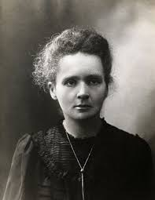
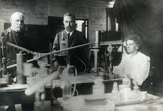

Biography
Marie Curie was born in Warsaw on November 7, 1867, the daughter of a secondary-school teacher. She received her education in local schools and some scientific training from her father.In 1891, she left her home and travelled to to Paris to continue her studies at the Sorbonne where she obtained Licenciateships in Physics and the Mathematical Sciences. While there met a man named Pierre Curie, Professor in the School of Physics in 1894 and later on they got married.
Marie Curry and her husband worked on research together in labs that were in unsafe conditions. The Curies discovered polonium and radium; they worked to separate radium from radioactive residues to uncover its characterization and study its properties. She promoted the use of radium to aid with suffering and used her time to remedial work during World War I.
The importance of Mme. Curie's work is reflected in the numerous awards she received. She got many honorary science, medicine and law degrees and honorary memberships of learned societies throughout the world. Together with her husband, she was awarded half of the Nobel Prize for Physics in 1903
